class: center, title-slide <br><br> ## CSCI-UA 480: APS ## Algorithmic Problem Solving <br/><br/><br/><br/><br/><br/><br/> ## Disjoint Set / Union-Find Data Structures .author[ Instructor: Joanna Klukowska <br> ] .license[ Copyright 2020 Joanna Klukowska. Unless noted otherwise all content is released under a <br> [Creative Commons Attribution-ShareAlike 4.0 International License](https://creativecommons.org/licenses/by-sa/4.0/).<br> Background image by Stewart Weiss<br>] --- layout:true template: default name: section class: inverse, middle, center --- layout:true template: default name: challenge class: challenge --- layout:true template: default name: poll class: inverse, full-height, center, middle --- layout:true template: default name: breakout class: breakout --- layout:true template:default name:slide class: slide .bottom-left[© Joanna Klukowska. CC-BY-SA.] --- ## Friends There is a town with $N$ citizens. It is known that some pairs of people are friends. According to the famous saying that "The friends of my friends are my friends, too," it follows that if $A$ and $B$ are friends and $B$ and $C$ are friends, then $A$ and $C$ are friends, too. Your task is to count how many people there are in the largest group of friends. .small[ __Input__: The first line contains two numbers $N$ and $M$, where $N$ is the number of people ($1 \le N \le 30000$) and $M$ is the number of pairs of people ($0 \le M \le 500000$) known to be friends. Each of the following $M$ lines consists of two integers $A$ and $B$ ($1 \le A, B \le N$, $A \neq B$) which describe that $A$ and $B$ are friends. There could be repetitions among the given pairs. __Output__: The size of the largest group of friends. ] .left-column2[ __Example__ ``` Input 3 2 1 2 2 3 Output 3 ``` ] .right-column2[ __Example__ ``` Input 10 11 1 2 3 1 3 4 5 4 3 5 4 6 5 2 2 1 7 1 9 10 8 9 Output 7 ``` ] --- ## Friends - Idea 1 - **Represent the Graph:** - Model citizens as vertices labeled $1$ to $N$. - Model friendships as undirected edges between vertices. - Store this as an **adjacency list** (or an adjacency matrix). - **Track Visited Citizens:** - Maintain a boolean array `visited` initialized to `FALSE`. - **Traverse and Count:** - Iterate through every citizen $i$ from $1$ to $N$: - If citizen $i$ has not been visited, start a Depth-First Search (DFS) or Breadth-First Search (BFS) from $i$. - During the traversal, mark every reachable citizen as visited and increment a component size counter. - Update your global `max_group_size` with the size of the component you just explored. -- **Time Complexity**: $\mathcal{O}(N + M)$, where $N$ is the number of citizens and $M$ is the number of friendship pairs. Every node and edge is processed once. **Space Complexity**: $\mathcal{O}(N + M)$ to store the adjacency list and recursion stack/queue. --- ## Friends 2 There is a town with $N$ citizens. It is known that some pairs of people are friends. According to the famous saying that "The friends of my friends are my friends, too," it follows that if $A$ and $B$ are friends and $B$ and $C$ are friends, then $A$ and $C$ are friends, too. In this town there are town parties each weekend where citizens of the town get to make new friends. (No friendships are ever broken.) Your task is to count how many people there are in the largest group of friends at the end of each weekend. --- ## Friends 2 - Idea 1 - Standard graph traversals cannot incrementally update component sizes without full re-traversal, so the graph must be re-scanned at the end of each weekend. -- **Time Complexity**: - Per-weekend update $\mathcal{O}(N + M\_{\text{current}})$, where $M\_{current}$ is the total accumulated friendships up to that point. - Total time over $W$ weekends with $M$ total friendships: $\mathcal{O}(W \cdot N + W \cdot M)$. **Space Complexity**: - $\mathcal{O}(N + M)$ memory to maintain the full graph structure in an adjacency list. --- ## Disjoint Set / Union-Find - Tracks a set of elements partitioned into disjoint subsets. Disjoint? -- = Non-overlapping; no elements in common. -- - Amortized performance: near-constant time (bounded by the inverse [Ackermann function](https://en.wikipedia.org/wiki/Ackermann_function)) for: - `FIND(x)` — determine which set an element belongs to - `SAME-SET(x, y)` — determine if $x$ and $y$ belong to the same set - `UNION(x, y)` — merge two sets of which $x$ and $y$ are members - The above performance assumes: - Path compression - Merging by rank (or by size) --- ## Example .center[<p>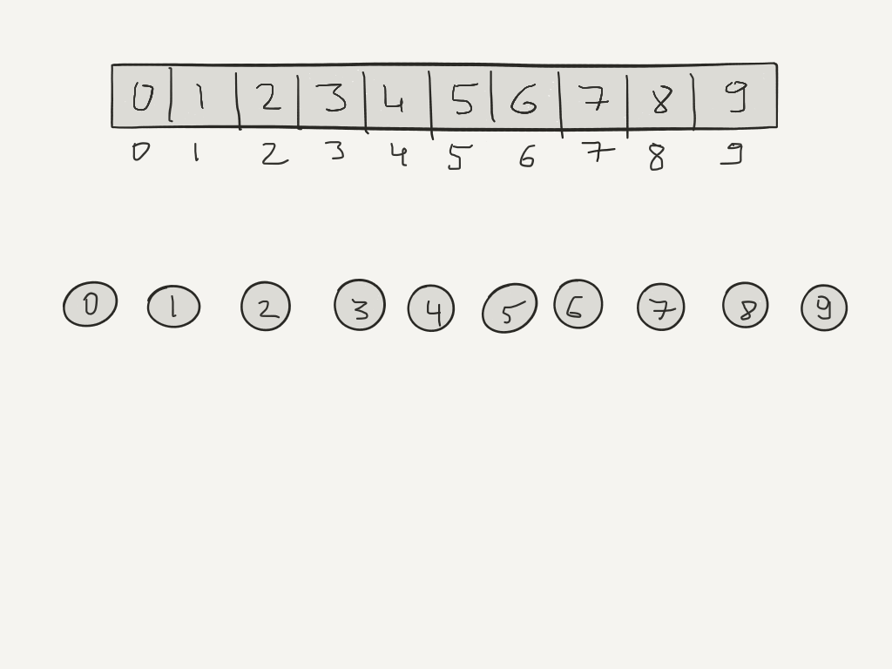</p>] --- ## Example .center[<p>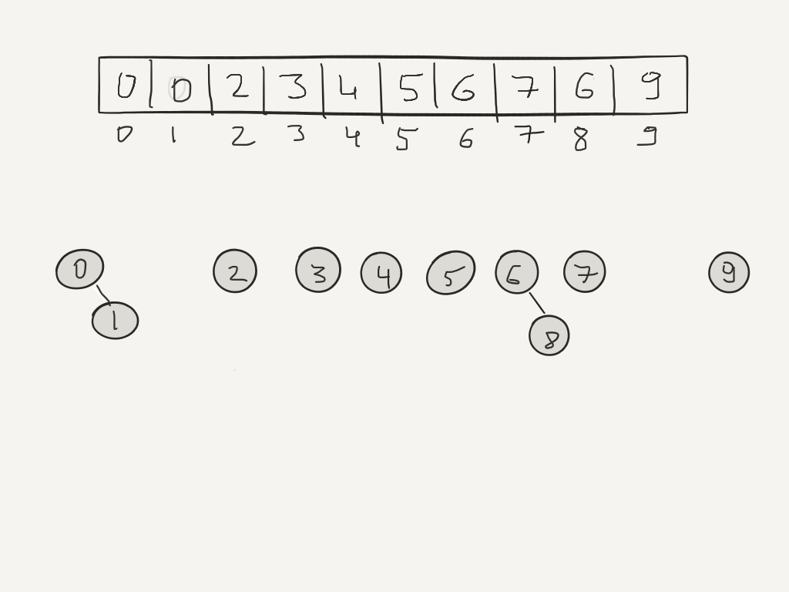</p>] `UNION(0, 1)`<br> `UNION(6, 8)` --- ## Example .center[<p>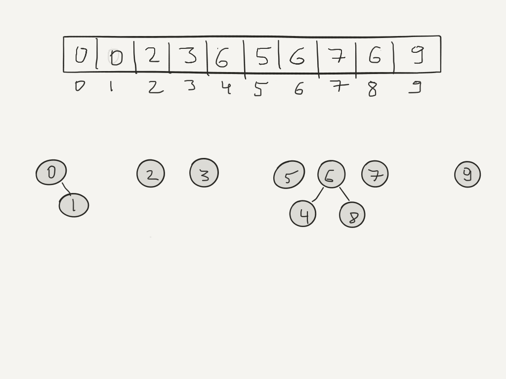</p>] `UNION(4, 6)`<br> (Uses merging by rank: the _tree_ with larger rank becomes the root) --- ## Example .center[<p>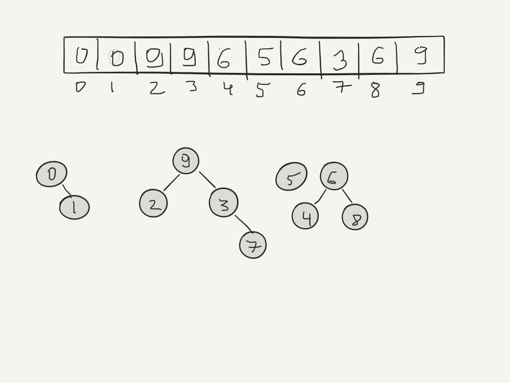</p>] `UNION(3, 7)`<br> `UNION(2, 9)`<br> `UNION(9, 3)` --- ## Example .center[<p>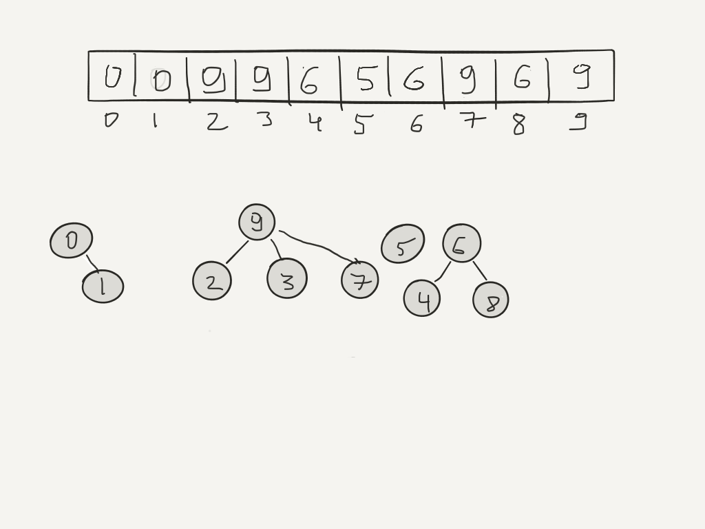</p>] `FIND(7)`<br> (Uses path compression) --- ## Disjoint Set / Union-Find - Each tree is one subset (in which all pairs of elements have some required property, e.g., they are friends). - Each tree's root is the representative of the subset (we often use the root as the _name_ for the subset). - Merging two subsets is performed by merging their respective trees. -- - Stored as arrays in which elements are indices into the array. - For an element `i`, its parent element is `parent[i]`. - Different conventions to indicate the root: the simplest (though not most space-efficient) is: `parent[i] = i` for the root. --- ## Visualizations - [USFCA Visualization](https://www.cs.usfca.edu/~galles/visualization/DisjointSets.html) - [VisuAlgo](https://visualgo.net/en/ufds?slide=1) --- ## Friends - Idea 2 1. **Initialize Sets:** - Each citizen starts in their own set of size 1. - Maintain a `parent` array where `parent[i] ← i` and a `size` array where `size[i] ← 1`. 2. **Process Friendships:** - For each given pair $(A, B)$: - Find the root representative of $A$ and the root representative of $B$ using a `FIND` operation with path compression. - If `FIND(A) != FIND(B)` (they belong to different groups): - Merge the two groups using a `UNION` operation. - Combine their sizes: `size[rootA] ← size[rootA] + size[rootB]`. - Update your running `max_group_size`. 3. **Return Result:** - The answer is the maximum value present in your `size` tracking array after processing all friendship pairs. -- - **Time Complexity:** $\mathcal{O}((N + M) \cdot \alpha(N))$, where $\alpha$ is the Inverse Ackermann function (effectively constant time, $\mathcal{O}(1)$, in practice). - **Space Complexity:** $\mathcal{O}(N)$ auxiliary space for the `parent` and `size` arrays (no adjacency lists needed). --- ## Friends 2 - Idea 2 1. **Initialize Sets:** - Each citizen starts in their own set of size 1. - Maintain a `parent` array where `parent[i] ← i` and a `size` array where `size[i] ← 1`. 2. **For each weekend $w$, Process New Friendships:** - For each given pair $(A, B)$: - Find the root representative of $A$ and the root representative of $B$ using a `FIND` operation with path compression. - If `FIND(A) != FIND(B)` (they belong to different groups): - Merge the two groups using a `UNION` operation. - Combine their sizes: `size[rootA] ← size[rootA] + size[rootB]`. - Update your running `max_group_size` for this weekend. -- - **Time Complexity**: - Initialization: $\mathcal{O}(N)$ - Per Friendship Added: $\mathcal{O}(\alpha(N))$ amortized time (virtually $\mathcal{O}(1)$). - Total time over $W$ weekends with $M$ total friendships: $\mathcal{O}(N + M \cdot \alpha(N))$. - **Space Complexity**: $\mathcal{O}(N)$ auxiliary space for `parent` and `size` arrays. --- class:challenge <!--based on UVA 10583 Ubiquitous Religions--> ## Challenge There are $N$ students ($2 \le N \le 10^5$) on campus. Each student belongs to exactly one student club. We do not know what clubs the students belong to, but we do have information about pairs of students who belong to the same club. This information is presented in the form of pairs: $(a, b)$ — this indicates that students $a$ and $b$ belong to the same student club. We have $P$ ($1 \le P \le 10^5$) such pairs. The pairs are not guaranteed to be unique. Find the number of student clubs on campus. __Example:__ $N = 5$ (so at most 5 clubs) List of pairs: ``` (1, 2) (1, 4) (3, 5) (2, 4) ``` -- __Answer__: There are two student clubs. --- ## Performance Improvement: ## Path Compression - Performed during `FIND` operations. - When traversing the path from the node to its root, set the parent of each node along that path to be the root. <p>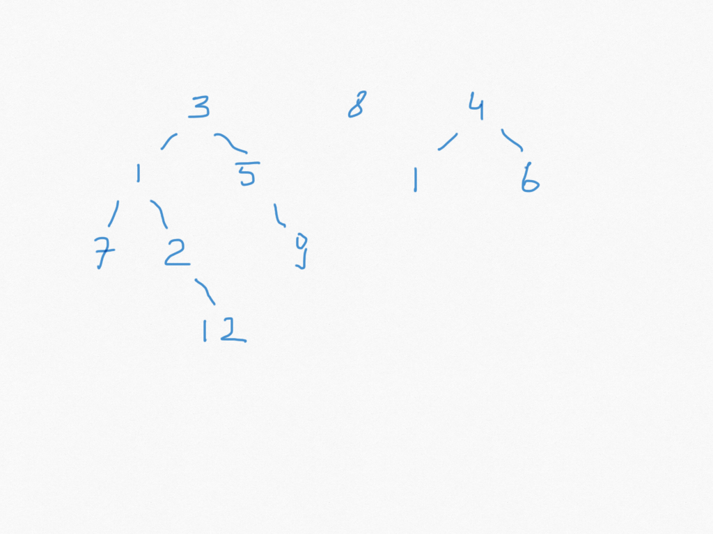</p>`FIND(12)` <p>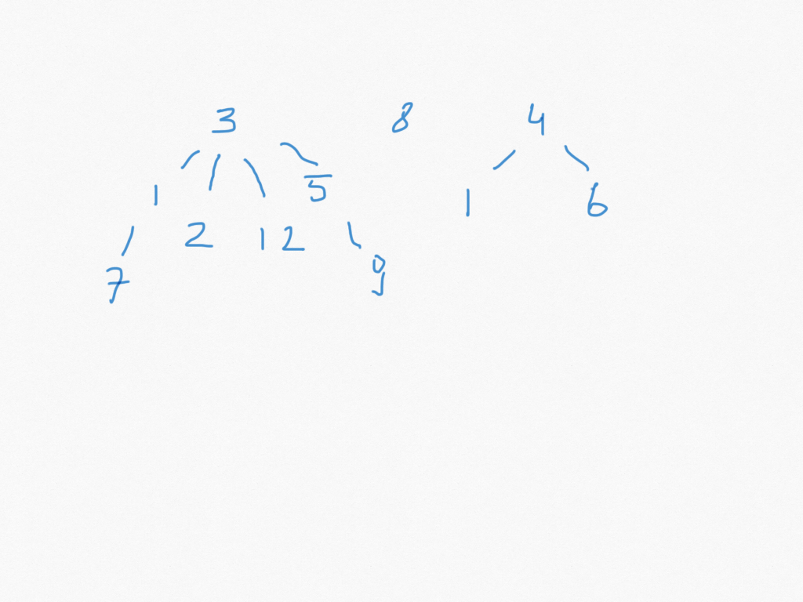</p> --- name:path_comp ## Performance Improvement: ## Path Compression - Performed during `FIND` operations. - When traversing the path from the node to its root, set the parent of each node along that path to be the root (effectively shortening the paths). -- - `FIND(i)` without path compression: ``` FIND(i) while parent[i] != i do i ← parent[i] return i ``` --- template:path_comp - `FIND(i)` with path compression: ``` FIND(i) if parent[i] == i then return i // Recursively find the root of the set. As recursion unwinds, // set the parent of 'i' directly to the root. parent[i] ← FIND(parent[i]) return parent[i] ``` --- ## Performance Improvement: ## Merging by Rank - Performed during the `UNION` operation. - **Rank**: An upper bound on the height of the tree (stored in a separate `rank` array). Initially, all ranks for singleton sets are $0$. - When merging two sets/trees, point the root of the tree with the lower rank to the root of the tree with the higher rank. --- ## Performance Improvement: ## Merging by Rank ``` UNION(i, j) root_i ← FIND(i) root_j ← FIND(j) // If they are already in the same set, do nothing. if root_i == root_j then return // Attach the smaller-rank tree under the root of the higher-rank tree. if rank[root_i] < rank[root_j] then parent[root_i] ← root_j else if rank[root_i] > rank[root_j] then parent[root_j] ← root_i else // If ranks are equal, pick one as root and increment its rank. parent[root_j] ← root_i rank[root_i] ← rank[root_i] + 1 ``` -- Why don't we increment the rank when `rank[root_i] != rank[root_j]`? --- ## Performance Improvement: ## Merging by Size - An alternative to merging by rank: uses the total number of nodes in the tree instead of the approximate depth. --- ## Performance Improvement: ## Merging by Rank/Size - Can we store rank/size information without using an extra array? -- (For the rest of this discussion, we focus on size.) -- - Use the original array that stores parent information. To indicate that an element is the root of the set, set its value to `-size`. - Discovering a negative value identifies a root (instead of checking `parent[i] == i`). - The absolute value of `parent[i]` gives the size of the set. --- ## Performance Improvement ``` -------------------------------------------------------------- -1 -1 -1 -1 -1 -1 -1 -1 -1 -1 -1 -1 -1 -1 -------------------------------------------------------------- 0 1 2 3 4 5 6 7 8 9 10 11 12 13 ``` -- `UNION(3, 7)` ``` -------------------------------------------------------------- -1 -1 -1 -2 -1 -1 -1 3 -1 -1 -1 -1 -1 -1 -------------------------------------------------------------- 0 1 2 3 4 5 6 7 8 9 10 11 12 13 ``` -- `UNION(2, 5)`, `UNION(5, 12)` ``` -------------------------------------------------------------- -1 -1 -3 -2 -1 2 -1 3 -1 -1 -1 -1 2 -1 -------------------------------------------------------------- 0 1 2 3 4 5 6 7 8 9 10 11 12 13 ``` --- class:challenge ## Challenge How will this array change after `UNION(2, 3)` is executed? Draw the trees associated with these sets. ``` -------------------------------------------------------------- -1 -1 -3 -2 -1 2 -1 3 -1 -1 -1 -1 2 -1 -------------------------------------------------------------- 0 1 2 3 4 5 6 7 8 9 10 11 12 13 ``` --- class:challenge ## Challenge How will this array change after `UNION(7, 12)` is executed? Draw the trees associated with these sets. ``` -------------------------------------------------------------- -1 -1 -3 -2 -1 2 -1 3 -1 -1 -1 -1 2 -1 -------------------------------------------------------------- 0 1 2 3 4 5 6 7 8 9 10 11 12 13 ``` --- class:challenge ## Challenge How will this array change after the following three union operations are executed: `UNION(8, 9)`, `UNION(10, 11)`, `UNION(8, 10)` (in that order)? Draw the trees associated with these sets. ``` -------------------------------------------------------------- -1 -1 -3 -2 -1 2 -1 3 -1 -1 -1 -1 2 -1 -------------------------------------------------------------- 0 1 2 3 4 5 6 7 8 9 10 11 12 13 ``` --- class:challenge ## Challenge: Allies and Enemies There are $N$ countries ($2 \le N \le 10^5$). Any pair of countries are either allies or enemies. Operations to be implemented: - `ALLY(x, y)`: $x$ and $y$ are allies. - `ENEMY(x, y)`: $x$ and $y$ are enemies. - `IS-ALLY(x, y)`: Queries whether $x$ and $y$ are allies. - `IS-ENEMY(x, y)`: Queries whether $x$ and $y$ are enemies. (If an `ALLY` or `ENEMY` operation conflicts with existing information, ignore it and report a conflict.) We have the following properties: - If `ALLY(x, y)` and `ALLY(y, z)`, then `ALLY(x, z)`. - If `ALLY(x, y)` and `ENEMY(y, z)`, then `ENEMY(x, z)`. - If `ENEMY(x, y)` and `ALLY(y, z)`, then `ENEMY(x, z)`. - If `ENEMY(x, y)` and `ENEMY(y, z)`, then `ALLY(x, z)`. --- ## Challenge: Allies and Enemies ## Example $N = 5$ (countries numbered $1 - 5$) | Instructions | Response | |:---|:---| |`IS-ALLY(1, 2)` | false, no info yet | |`IS-ENEMY(1, 2)` | false, no info yet | |`ALLY(1, 2)` | OK (no conflict) | |`ALLY(3, 4)` | OK (no conflict) | |`ENEMY(1, 2)` | conflict | |`ENEMY(1, 4)` | OK (no conflict) | |`IS-ENEMY(1, 3)` | true | |`ENEMY(1, 5)` | OK (no conflict) | |`IS-ALLY(2, 5)` | false | |`IS-ALLY(3, 5)` | true | |`ENEMY(4, 5)` | conflict | --- ## Challenge: Allies and Enemies ## Solution Represent each country with two nodes: $x$ (friend node) and $x'$ (enemy node). The operations can be implemented using Disjoint Sets as follows: - `ALLY(x, y)`: - If `SAME-SET(x, y')`, report conflict. - Otherwise, `UNION(x, y)` and `UNION(x', y')`. - `ENEMY(x, y)`: - If `SAME-SET(x, y)`, report conflict. - Otherwise, `UNION(x, y')` and `UNION(x', y)`. - `IS-ALLY(x, y)`: - Return `SAME-SET(x, y)`. - `IS-ENEMY(x, y)`: - Return `SAME-SET(x, y')`. --- ## Challenge: Allies and Enemies ## Example Solution $N = 5$ (countries numbered $1 - 5$) | Instructions | Response | Disjoint Set Array | |:---|:---|:---| | | | `| 1 | 2 | 3 | 4 | 5 | 1'| 2'| 3'| 4'| 5'|` | |`IS-ALLY(1, 2)` | false, no info | `|-1 |-1 |-1 |-1 |-1 |-1 |-1 |-1 |-1 |-1 |` | |`IS-ENEMY(1, 2)` | false, no info | `|-1 |-1 |-1 |-1 |-1 |-1 |-1 |-1 |-1 |-1 |` | |`ALLY(1, 2)` | OK | `|-2 | 1 |-1 |-1 |-1 |-2 | 1'|-1 |-1 |-1 |` | |`ALLY(3, 4)` | OK | `|-2 | 1 |-2 | 3 |-1 |-2 | 1'|-2 | 3'|-1 |` | |`ENEMY(1, 2)` | conflict | `|-2 | 1 |-2 | 3 |-1 |-2 | 1'|-2 | 3'|-1 |` | |`ENEMY(1, 4)` | OK | `|-4 | 1 | 1'| 3 |-1 |-4 | 1'| 1 | 3'|-1 |` | |`IS-ENEMY(1, 3)` | true | `|-4 | 1 | 1'| 3 |-1 |-4 | 1'| 1 | 3'|-1 |` | |`ENEMY(1, 5)` | OK | `|-5 | 1 | 1'| 3 | 1'|-5 | 1'| 1 | 3'| 1 |` | |`IS-ALLY(2, 5)` | false | `|-5 | 1 | 1'| 3 | 1'|-5 | 1'| 1 | 3'| 1 |` | |`IS-ALLY(4, 5)` | true | `|-5 | 1 | 1'| 1'| 1'|-5 | 1'| 1 | 3'| 1 |` *| |`ENEMY(4, 5)` | conflict | `|-5 | 1 | 1'| 1'| 1'|-5 | 1'| 1 | 3'| 1 |` | <sup>*</sup> Path compression applied. --- ## Challenge: Build a Maze Given an $N \times N$ grid, generate a random maze (i.e., start with a 2D grid with full separation, then remove walls to join cells on opposite sides). - Fixed start point $S$ and end point $E$. - No cycles in the maze. - Every cell must be reachable from every other cell. ``` -- -- -- -- -- -- S | | | | | | -- -- -- -- -- -- | | | | | | | -- -- -- -- -- -- | | | | | | | -- -- -- -- -- -- | | | | | | | -- -- -- -- -- -- | | | | | | | -- -- -- -- -- -- | | | | | | E -- -- -- -- -- -- ``` --- ## Challenge: Building a Maze __Algorithm__: - Create a set of all internal walls. - Create a disjoint set of all cells (initially, each cell is in its own set). - While there is more than 1 set of cells: - Choose a wall $W$ at random from the wall set. - If the cells on either side of $W$ are NOT in the same set: - Erase $W$ from the maze. - `UNION` the two sets associated with the two cells. --- ``` -- -- -- -- -- -- S | | | | | | -- -- -- -- -- -- | | | | | | | -- -- -- -- -- -- | | | | | | | -- -- -- -- -- -- | | | | | | | -- -- -- -- -- -- | | | | | | | -- -- -- -- -- -- | | | | | | E -- -- -- -- -- -- ``` --- ``` -- -- -- -- -- -- S | W | | | | -- -- -- -- -- -- | | | | | | | -- -- -- -- -- -- | | | | | | | -- -- -- -- -- -- | | | | | | | -- -- -- -- -- -- | | | | | | | -- -- -- -- -- -- | | | | | | E -- -- -- -- -- -- ``` --- ``` -- -- -- -- -- -- S | | | | | -- -- -- -- -- -- | | | | | | | -- -- -- -- -- -- | | | | | | | -- -- -- -- -- -- | | | | | | | -- -- -- -- -- -- | | | | | | | -- -- -- -- -- -- | | | | | | E -- -- -- -- -- -- ``` --- ``` -- -- -- -- -- -- S | | | | | -- -- -- -- -- -- | | | | W | | -- -- -- -- -- -- | | | | | | | -- -- -- -- -- -- | | | | | | | -- -- -- -- -- -- | | | | | | | -- -- -- -- -- -- | | | | | | E -- -- -- -- -- -- ``` --- ``` -- -- -- -- -- -- S | | | | | -- -- -- -- -- -- | | | | | | -- -- -- -- -- -- | | | | | | | -- -- -- -- -- -- | | | | | | | -- -- -- -- -- -- | | | | | | | -- -- -- -- -- -- | | | | | | E -- -- -- -- -- -- ``` --- ``` -- -- -- -- -- -- S | | | | | -- -- -- W -- -- | | | | | | -- -- -- -- -- -- | | | | | | | -- -- -- -- -- -- | | | | | | | -- -- -- -- -- -- | | | | | | | -- -- -- -- -- -- | | | | | | E -- -- -- -- -- -- ``` --- ``` -- -- -- -- -- -- S | | | | | -- -- -- -- -- | | | | | | -- -- -- -- -- -- | | | | | | | -- -- -- -- -- -- | | | | | | | -- -- -- -- -- -- | | | | | | | -- -- -- -- -- -- | | | | | | E -- -- -- -- -- -- ``` --- ``` -- -- -- -- -- -- S | | | | | -- -- -- W -- | | | | | | -- -- -- -- -- -- | | | | | | | -- -- -- -- -- -- | | | | | | | -- -- -- -- -- -- | | | | | | | -- -- -- -- -- -- | | | | | | E -- -- -- -- -- -- ``` --- ``` -- -- -- -- -- -- S | | | | | -- -- -- -- | | | | | | -- -- -- -- -- -- | | | | | | | -- -- -- -- -- -- | | | | | | | -- -- -- -- -- -- | | | | | | | -- -- -- -- -- -- | | | | | | E -- -- -- -- -- -- ``` --- ``` -- -- -- -- -- -- S | | W | | -- -- -- -- | | | | | | -- -- -- -- -- -- | | | | | | | -- -- -- -- -- -- | | | | | | | -- -- -- -- -- -- | | | | | | | -- -- -- -- -- -- | | | | | | E -- -- -- -- -- -- ``` --- ``` -- -- -- -- -- -- S | | | | | -- -- -- -- | | | | | | -- -- -- -- -- -- | | | | | | | -- -- -- -- -- -- | | | | | | | -- -- -- -- -- -- | | | | | | | -- -- -- -- -- -- | | | | | | E -- -- -- -- -- -- ``` --- ``` -- -- -- -- -- -- S | | | | | -- -- -- -- | | | | | | -- W -- -- -- -- | | | | | | | -- -- -- -- -- -- | | | | | | | -- -- -- -- -- -- | | | | | | | -- -- -- -- -- -- | | | | | | E -- -- -- -- -- -- ``` --- ``` -- -- -- -- -- -- S | | | | | -- -- -- -- | | | | | | -- -- -- -- -- | | | | | | | -- -- -- -- -- -- | | | | | | | -- -- -- -- -- -- | | | | | | | -- -- -- -- -- -- | | | | | | E -- -- -- -- -- -- ``` --- ``` -- -- -- -- -- -- S | | | | | -- -- -- -- | | | | | | -- -- -- -- -- | | | W | | | -- -- -- -- -- -- | | | | | | | -- -- -- -- -- -- | | | | | | | -- -- -- -- -- -- | | | | | | E -- -- -- -- -- -- ``` --- ``` -- -- -- -- -- -- S | | | | | -- -- -- -- | | | | | | -- -- -- -- -- | | | | | | -- -- -- -- -- -- | | | | | | | -- -- -- -- -- -- | | | | | | | -- -- -- -- -- -- | | | | | | E -- -- -- -- -- -- ``` --- ``` -- -- -- -- -- -- S | | | | | W -- -- -- | | | | | | -- -- -- -- -- | | | | | | -- -- -- -- -- -- | | | | | | | -- -- -- -- -- -- | | | | | | | -- -- -- -- -- -- | | | | | | E -- -- -- -- -- -- ``` --- ``` -- -- -- -- -- -- S | | | | | -- -- -- | | | | | | -- -- -- -- -- | | | | | | -- -- -- -- -- -- | | | | | | | -- -- -- -- -- -- | | | | | | | -- -- -- -- -- -- | | | | | | E -- -- -- -- -- -- ``` --- .largest[...] --- ## Challenge: Counting Islands An $N \times M$ grid of integers gives terrain elevation. Given a water level $L$, every cell with height $\le L$ is under water. The islands are the cells above water. An island is a group of 4-connected cells (connected horizontally or vertically, not diagonally). Determine the number of islands. .center[ <p>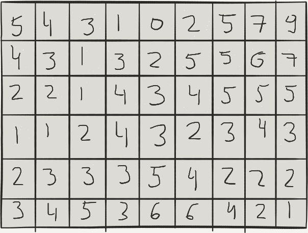</p> <p>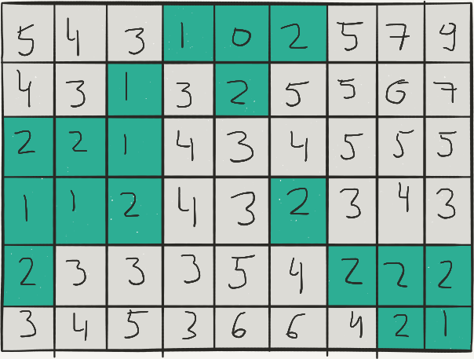</p> $L = 2$: there are 2 islands] --- ## Challenge: Counting Islands An $N \times M$ grid of integers gives terrain elevation. Given a water level $L$, every cell with height $\le L$ is under water. The islands are the cells above water. An island is a group of 4-connected cells (connected horizontally or vertically, not diagonally). Determine the number of islands. .center[ <p>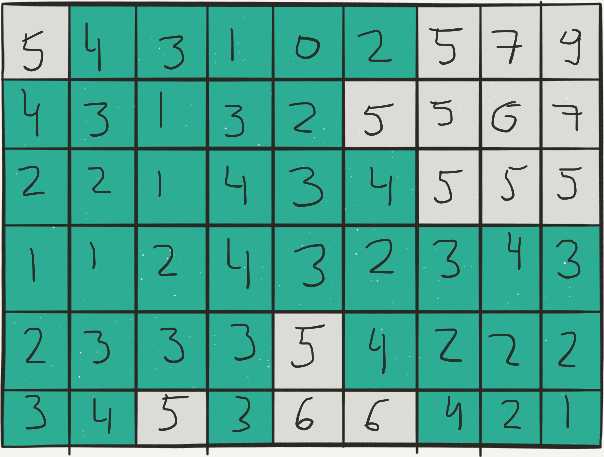</p> $L = 4$: there are 4 islands] --- ## Challenge: Counting Islands An $N \times M$ grid of integers gives terrain elevation. Given a water level $L$, every cell with height $\le L$ is under water. The islands are the cells above water. An island is a group of 4-connected cells (connected horizontally or vertically, not diagonally). Determine the number of islands. .center[ <p>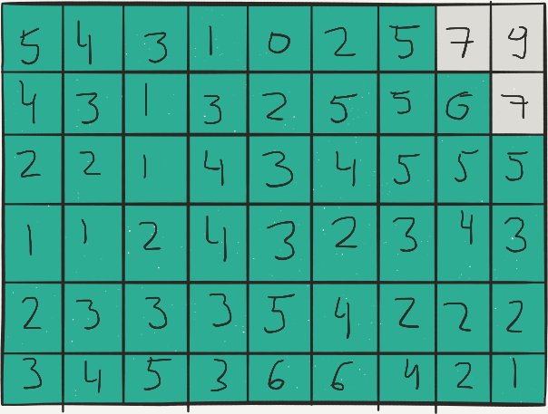</p> $L = 6$: there is 1 island] --- ## Counting Islands __Solution 1__: Use an $\mathcal{O}(N \cdot M)$ algorithm that visits all cells one by one. For each cell above water, perform a traversal (e.g., DFS/BFS) to visit all adjacent land cells, marking them visited. Increment the island count for each connected component found. ---- -- __Solution 2__: Use a Disjoint Set data structure. -- For each cell above water, inspect its 4 adjacent neighbors. If a neighbor is also above $L$, `UNION` the two cells. The number of non-water sets is the number of islands. -- *(Note: Cells with values $\le L$ are ignored/not placed in land sets).* ---- -- __Problem Variation__: What if we need to output the answer across continuously changing water levels? - Global warming $\rightarrow$ water level rising. - Post-flooding $\rightarrow$ water level falling. --- ## Counting Islands (Continuous Levels) This approach counts islands for levels from largest (everything submerged) to smallest (everything exposed): - Initialize each cell in its own set. - Sort cells in descending order by elevation. - For level $L_0$ (highest water level), iterate over all cells with elevation $> L_0$. `UNION` each with its 4 neighbors if the neighbor is also $> L_0$. Track the island count. - For level $L_1$ (next highest level), iterate over cells with elevation $> L_1$ and $\le L_0$. `UNION` each with its 4 neighbors if the neighbor is $> L_1$. Track the updated island count. - Repeat for all remaining water levels.